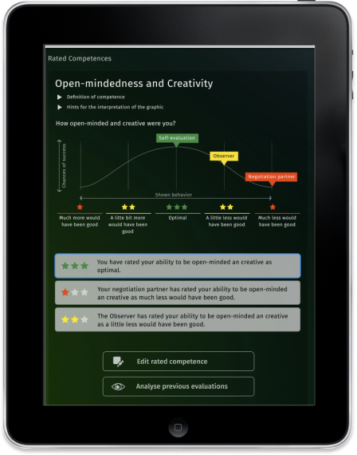

Solutions
Verhandlungskompetenz wird messbar
Added Insight ist ein digitales Tool, dass die Qualität Ihrer Verhandlungsführung misst und bewertet.

Solutions
Strukturierte und fundierte Auswertung
Die Qualität der Verhandlungsführung wird anhand von Sub-Kompetenzen gemessen, die in Kooperation mit Wissenschaftlern bestimmt wurden.
Solutions
Selbst- und Fremdauswertung
Für ein objektiveres Analyseergebnis können Sie sich mit Added Insight nicht nur selbst auswerten sondern sich auch von Drittpersonen einschätzen lassen.